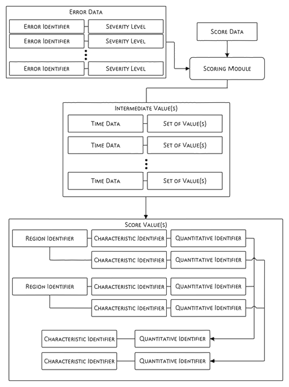
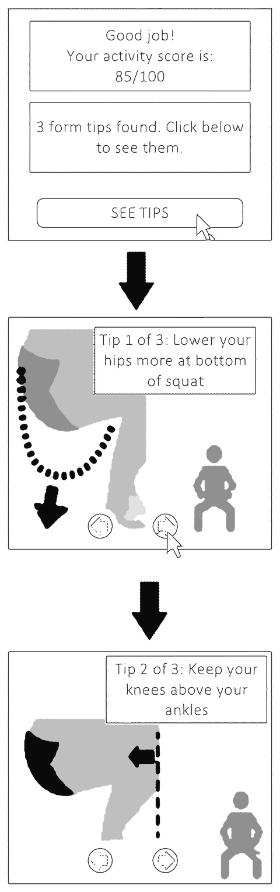

Halo Movement
I was the product lead for Movement, end to end. I set what the score had to match: the judgment of a movement expert. I cut the experts’ 10 to 15 exercises to five anyone could do at home, turned the score into a program with real-time feedback, took it through a validation study and wrote the announcement.
- Launched
- June 2021Amazon ended Halo in 2023.
- Validated
- 150 adults, npj Digital Medicine, 2022
- Result
- More than 80% improved at two weeksMembers who did the exercises for two weeks, then reassessed.

Decisions
- Set the score to match a movement expert’s judgment
- Cut the experts’ 10 to 15 exercises to five anyone could do at home
- Built real-time feedback into the program’s workouts
- Made variety in that feedback a measured dimension, when members asked for it
- Took the score through a study of 150 adults against clinical tests
Everyone wants to move better
Everyone wants to improve their mobility, and learning how well a person moves took a trained professional.
A full clinical screen needed a physical therapist and equipment: a goniometer to measure joint angles, foam pads, a hurdle and a plumb line. In 2022, the World Health Organization counted about 1.7 billion people living with musculoskeletal conditions, the leading contributor to disability worldwide.
In August 2020, Google released a model that found 33 body points in real time on a phone. My goal was a professional-grade mobility assessment and personal exercises, at home, with only a phone.
Five exercises an ordinary person can do
Our fitness experts first proposed 10 to 15 exercises, and many were hard for ordinary people.
I worked with the computer vision team to simplify the set while keeping the score aligned with what a fitness expert would give. The assessment we launched had five exercises and took under 10 minutes.
| Exercise | Dose |
|---|---|
| Single-leg balance | 10 seconds on each leg |
| Forward lunge | 3 on each leg |
| Overhead squat | 6 times |
| Overhead reach | 3 times |
| Feet-together squat | 3 times |
Matching a movement expert’s score
I set the target as the score a movement expert would give.
Amazon’s patent, filed in February 2021, shows how that judgment became data: experts annotated example videos with each error and its severity, from 0 to 3. The score was then checked against instruments. A registered study at Shirley Ryan AbilityLab, a rehabilitation hospital in Chicago, began on 21 April 2021, 10 weeks before launch. Its 150 adults wore a 17-sensor motion-capture suit and did 13 clinical tests with a physical therapist.
From video to a score and a program
A Halo member stood the phone on the floor, leveled it with an on-screen guide, and stepped back into a square framing the body.
The video was encrypted, analyzed in Amazon’s cloud within seconds and deleted, and no person saw it. Amazon’s patent describes the scoring: the system found body points in each frame, split out each repetition and matched it to expert-annotated examples.
Weighted errors became scores for mobility, stability and posture, by body area. The same errors chose the corrective exercises in the member’s program.
The patent’s scoring example
In the patent’s example, a score of 100 means no error and an error worth minus 10 gives 90; one error can lower several body-area scores by different amounts.

Score, program, reassess
The score led into a program of five to seven routines from a library of 35 corrective exercises by physical therapist Kelly Starrett.
We built real-time feedback into the workouts to make them dynamic, accurate and rich, which motivated people once they had a score. When members asked for more variety in that feedback, we made variety a measured dimension.
The app recommended two weeks of exercises before a new assessment. Of members who did the recommended exercises for two weeks and reassessed, more than 80% improved by a statistically significant margin. It was an Amazon product measure, separate from the 2022 study.
Amazon’s designs for workout feedback
Amazon’s patent filings of 2020 describe form tips on an avatar, a repetition count, and an instructor video that slows down or repeats when the user falls behind.

The top of the scale
The scale ran up to Olympic athletes, so even the most athletic people using Halo would rarely score above 90.
That raised a question for the product: whether to reset the scale. Amazon’s results screen at launch called a score of 71 “Good.” MyHealthyApple, a review site, listed five score bands in November 2022: “Good” began at 80, and 71 was “Okay.”

What a score of 81 meant
A score made sense beside the 2022 study’s three groups: athletes, healthy adults and adults with impaired movement.
The data as a table
| Group | Average score |
|---|---|
| Athletes | About 87 |
| Healthy adults | About 81 |
| Adults with impaired movement | About 68 |
Who the study’s three groups were
Athletes had trained at least 150 minutes a week in university or professional movement athletics, such as dance, gymnastics or yoga, in the past 2 years. Adults with impaired movement had a clinically diagnosed condition that affected daily living, such as arthritis or a mild stroke.
I wrote the announcement
On 3 June 2021, I announced Movement Health in a post on Amazon’s news site.
I wrote that the assessment “delivers comparable accuracy to an in-person assessment with a professional trainer.” The Verge, a technology news site, reported my statement that we had tested the algorithms across body types and ethnic groups.
Movement Health went live on 30 June 2021, included in the $3.99-a-month Halo membership. SlashGear, a technology news site, questioned the model’s accuracy and what members were compared against.
The study, published and cited
On 6 September 2022, npj Digital Medicine, a Nature Portfolio journal, published the validation study of the phone score.
In the study, athletes averaged about 87, healthy adults about 81 and adults with impaired movement about 68. Every pair of groups differed significantly. Athletes and healthy adults differed on the phone score, and on only a few of the clinical tests. Taken three times in a row, the score varied by under 2% on average.
Cited in later reviews
A 2024 review of 278 motion-capture studies found it was the only one to report participants’ racial breakdown. A 2025 review of eight camera-based screening apps found it had the largest sample. A 2026 review found it was the only one of 10 studies to test a functional movement battery.